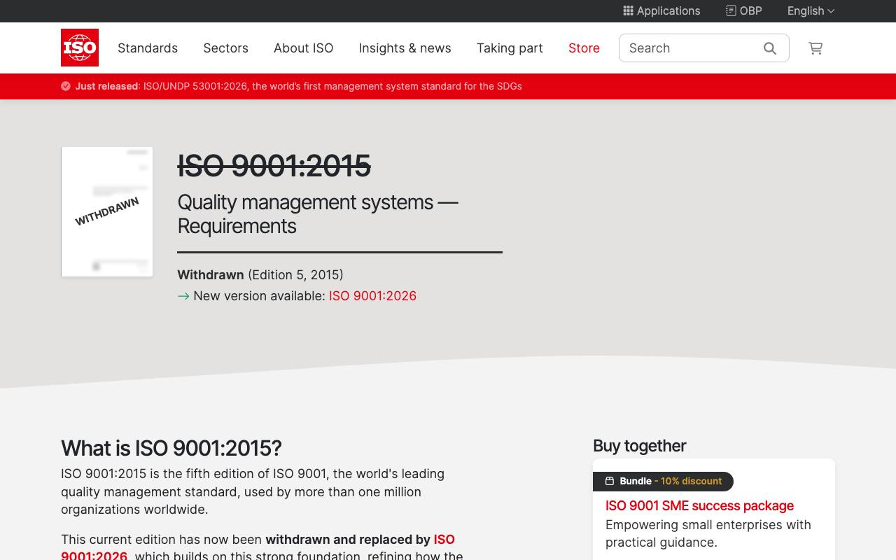

Справочник «Стандарты и сертификаты» · тема 3
Глава 8
Стандарты качества
и процессов
Качество программы и работы организации описывают отдельные стандарты. В главе разобраны цикл постоянного улучшения, ISO 9001, модель качества программного продукта ISO/IEC 25010, стандарты процессов и услуг, а также расчёт доступности сервиса.
- Документы
- ISO 9001:2015 · ISO/IEC 25010 · ISO/IEC/IEEE 12207:2017 · ISO/IEC 20000-1:2018 · ISO 22301:2019
- Уровень
- Средний
- Где встречается
- Требования к качеству в техническом задании, договоры на обслуживание
- Зачем это знать
- Чтобы записать требования к качеству измеримо
§1Цикл постоянного улучшения
Стандарты менеджмента ISO построены на одном цикле из четырёх шагов: планирование, выполнение, проверка, корректирующие действия. По первым буквам английских слов его называют PDCA.
- Поставить цель
- Оценить риски
- Назначить ответственных
- Сделать запланированное
- Вести записи о выполнении
- Измерить результат
- Провести внутренний аудит
- Устранить причины отклонений
- Изменить план
§2Стандарты по областям
| Стандарт | О чём | Кому нужен |
|---|---|---|
| ISO 9001:2015 | требования к системе менеджмента качества | любой организации; часто условие участия в закупке |
| ISO/IEC 25010 | модель качества программного продукта | тем, кто пишет требования и критерии приёмки |
| ISO/IEC/IEEE 12207:2017 | процессы жизненного цикла программных средств | тем, кто описывает порядок разработки |
| ISO/IEC 20000-1:2018 | требования к системе управления ИТ-услугами | службам поддержки и поставщикам услуг |
| ISO 22301:2019 | требования к системе управления непрерывностью деятельности | организациям, которым нельзя останавливаться |

§3Качество программы по ISO/IEC 25010
ISO/IEC 25010 делит качество программы на характеристики. В редакции, принятой в России как ГОСТ Р ИСО/МЭК 25010-2015, их восемь. Модель помогает не забыть ни одну сторону качества, когда пишут требования.
| Характеристика | Вопрос | Пример требования к платформе курсов |
|---|---|---|
| функциональная пригодность | делает ли программа то, что нужно | ученик записывается на курс и видит расписание |
| уровень производительности | как быстро и с какими затратами | страница курса открывается не дольше 2 секунд |
| совместимость | работает ли рядом с другими системами | оплата проходит через платёжный сервис заказчика |
| удобство использования | легко ли научиться и работать | запись на курс занимает не больше трёх шагов |
| надёжность | как часто отказывает и как быстро восстанавливается | доступность не ниже 99,9 % в месяц |
| защищённость | защищены ли данные и доступ | ученик видит только свои заявки |
| сопровождаемость | легко ли изменять и проверять | изменение проходит автоматические проверки до слияния |
| переносимость | можно ли перенести в другую среду | система разворачивается из контейнеров на другом сервере |
§4Доступность и уровни центров обработки данных
Доступность — доля времени, в течение которого сервис отвечает. Из неё следует допустимый простой.
| Доступность | Допустимый простой за год | Допустимый простой за месяц |
|---|---|---|
| 99 % | 3 суток 15 часов | 7 часов 18 минут |
| 99,9 % | 8 часов 46 минут | 44 минуты |
| 99,99 % | 53 минуты | 4 минуты |
Надёжность центров обработки данных оценивают по классификации Uptime Institute. В ней четыре уровня, от Tier I до Tier IV: чем выше уровень, тем больше резервирования питания и охлаждения.
§5Частые ошибки
§6Проверьте себя
- Назовите четыре шага цикла PDCA.
- Чем ISO 9001 отличается от ISO/IEC 25010 по предмету?
- Назовите восемь характеристик качества программы по ISO/IEC 25010.
- Какой простой за год допускает доступность 99,9 %?
- Запишите измеримое требование к надёжности и к производительности интернет-магазина.
PDCAISO 9001 — качество20000-1 — услуги22301 — непрерывность25010 — 8 характеристик12207 — жизненный циклтребование = число99 % — 3,65 суток99,9 % — 8 ч 46 мин99,99 % — 53 минTier I–IVСправочник «Стандарты и сертификаты» · глава 8Макаров Максим Николаевич